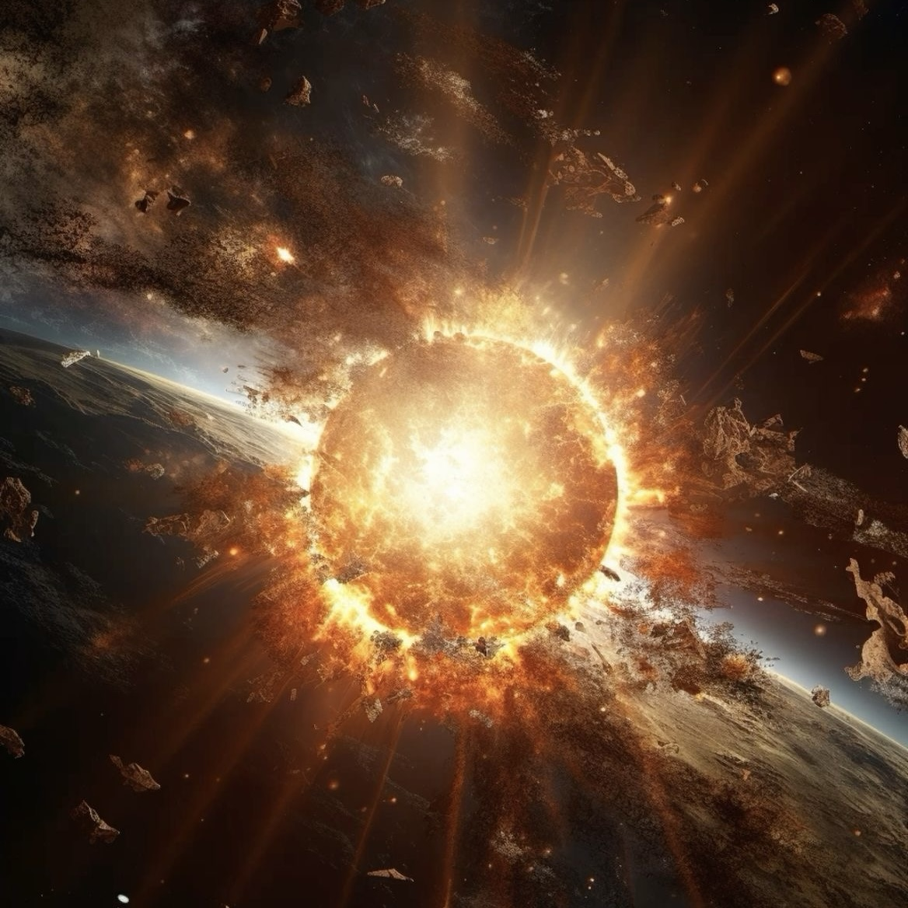
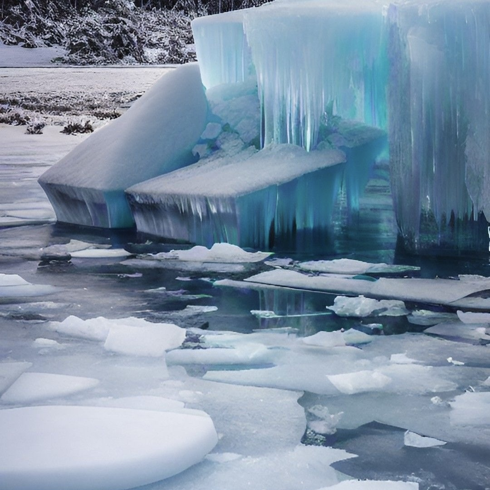

"制造全球性核污染"
"制造全球性核污染"

"大气层工程破坏"
 "排放人工温室气体"
"排放人工温室气体"

"加速冰川融化"
 "大规模森林焚烧"
"大规模森林焚烧"
立冬（11月7-8日）
冬季开始，作物休眠，适合农作物储备和越冬管理。
小雪（11月22-23日）
气温下降，小雪初现，土壤逐渐冻结。
大雪（12月6-8日）
降雪频繁，气温降低，农田基本封冻。
冬至（12月21-23日）
昼最短夜最长，寒冬来临，农田休整与储备。
小寒（1月5-7日）
一年中最寒冷时段，需加强作物防冻管理。
大寒（1月20-21日）
全年最冷时期，农田休养，准备春耕物资。
The 24 Solar Terms
"制造全球性核污染"
"排放人工温室气体"
"大规模森林焚烧"
通过频繁进行核试验或随意倾倒核废料，大量放射性物质进入环境，造成土壤、空气和水体的长期污染。
放射性物质对生态系统具有高度破坏性，导致植物无法生长、动物灭绝，并使大片土地数千年内都无法居住或使用。
通过释放化学物质（如氟利昂）破坏臭氧层，直接让地球暴露在紫外线的威胁下。
臭氧层的破坏会增加皮肤癌和白内障发病率，同时破坏植物的光合作用，进一步威胁粮食安全和生态系统平衡。
制造并大量排放高效温室气体（如六氟化硫、氢氟碳化物等），显著提高地球大气中温室气体浓度。
其结果是全球气温迅速上升，导致极端天气增多、海平面上升和农业生态系统失衡。
利用人造热源、工业设施或矿产开发直接对极地冰盖进行加热，造成冰川快速融化。
冰川的消融会释放大量封存的甲烷，加剧气候变暖，同时导致海平面上升，淹没沿海城市和低洼地区。
通过系统性焚毁热带雨林和温带森林，不仅释放巨量的二氧化碳，加剧温室效应， 还彻底摧毁野生生物的栖息地，导致物种大规模灭绝。森林的消失还会引发土壤侵蚀、水循环中断和局地气候失衡。